El Increíble Castillo Vagabundo
Una maldición, un mundo en guerra y un mago muy especial son algunos de los ingredientes de El Castillo Ambulante, película de Hayao Miyazaki y Studio Ghibli.
SIPNOSIS:
Tras recibir una maldición de la Bruja del Páramo que la ha convertido en una anciana, la joven Sophie decide dejarlo todo para embarcarse en un peligroso viaje con el objetivo de encontrarse con el poderoso mago Howl, quien vive en su Castillo Ambulante, y pedirle ayuda. Lo que ella desconoce es que será el propio Howl quien necesite su ayuda en más de un sentido.
RESUMEN:
En el país de Ingary, donde existen cosas como las botas de siete lenguas o las capas de invisibilidad, que una bruja te maldiga no es algo inusual. Cuando la Bruja del Páramo convierte a Sophie Hatter en una anciana, la joven abandona la sombrerería familiar para pedir ayuda en el único lugar mágico que se le ocurre: el castillo ambulante que atemoriza a los habitantes de Market Chipping. Pues dentro no sólo se halla un demonio del fuego, sino también el perverso mago Howl, tan diestro en realizar hechizos como en robar los corazones de las damas.
Sophie es la mayor de tres hermanas y bien es sabido que, como tal, es la que menos esperanzas tiene de futuro. Resignada a su destino, un día tiene la mala suerte de recibir la visita de la malvada Bruja del Páramo que, sin más, la hechiza y la convierte en una anciana de noventa años. Como su vida ya no podía ir a más, según ella, afronta su nueva situación con naturalidad y, con la esperanza de conseguir fortuna, acaba en la casa del mago Howl: el castillo ambulante.
Y dentro de ese mágico castillo, donde según qué color elijas para abrir la puerta acabas en un lado u otro, se desarrollará esta magnífica historia de fantasía, disparatada en ocasiones y enrevesada en otras. Conoceremos a personajes entrañables como Calcifer, el demonio de fuego; Michael, el joven aprendiz enamorado; y, por supuesto, al propio Howl, un mago cobarde e infantil, al que, al parecer, lo único que le importa es conquistar chicas y enrabietarse cuando no consigue lo que quiere.Con un tono lleno de humor y una narración desentendida, «El castillo ambulante» difiere por completo de su versión cinematográfica del Estudio Ghibli. Mientras que la película se centra sobre todo en la parte dura y cruel de la guerra, en el libro sucede todo lo contrario, llegando a ignorar este hecho para centrarse en la relación entre los personajes, a veces hilarante, y su evolución sutil. Es más, al final del libro se incluye una entrevista con la autora, Diana Wynne Jones, donde habla sobre las impresiones que tuvo al conocer los puntos de vista tan diferentes entre su obra y la película. En esta novela encontraréis mucha magia, muchas casualidades, y un final de cuento de hadas.
CRÍTICA:
El Castillo Ambulante presenta una historia en la que la protagonista femenina, Sophie, es la encargada de guiarnos por un mundo repleto de elementos mágicos que, además de sorprender a la propia joven, nos dejan a nosotros también con la boca abierta. Repuestos ya de la primera impresión, comprobamos que en el universo de Howl nada es lo que parece y en el que los buenos no son tan buenos ni los malos tan malos. Prueba de ello es el propio mago, quien, aunque no lo parezca, sufre una clara evolución a lo largo de la cinta, al igual que la joven Sophie, pues pasa de ser una joven tímida y sin motivación a convertirse en una mujer valiente y dispuesta a hacer todo lo que sea necesario para salvar lo que más quiere.
La película, asimismo, nos presenta un conflicto bélico en el que se pretende que todos los magos del lugar participen para la causa de los más poderosos. Lamentablemente a este punto se le da mucha más importancia de la que en realidad merece y sirve únicamente para mostrar la verdadera naturaleza de Howl de una manera que contente al espectador. Una naturaleza que, debo añadir, difiere bastante de lo que aparece en el libro original, pero ese es un punto que trataré un poco más abajo. La historia de El Castillo Ambulante es clara, concisa, dando a cada personaje un final cerrado para que no queden cabos sueltos. Asimismo, la narración intercala perfectamente los momentos más lentos con los más ajetreados y también con aquellos que presentan una gran carga de humor (que no puede faltar para nuestra alegría). Por supuesto también encontramos escenas que, aparte de mostrarnos todas las bondades de cada uno de los lugares que visitan nuestros protagonistas, no ofrecen nada al desarrollo de la historia y que se podrían haber sustituido por otras que dieran más detalles de la trama (como sí que hace el libro en el que se basa la cinta).
En lo que respecta a los personajes, el largometraje ofrece un grupo de héroes y villanos con unos rasgos muy particulares y que rápidamente llegan al corazón del espectador. Desde el excéntrico Howl hasta la (a veces) insoportable Bruja del Páramo, todos y cada uno tienen algo que ofrecer a la trama, además de que su diseño tan bien realizado refleja la magia y la ternura en determinadas ocasiones. Tal y como hemos mencionado antes, la película El Increíble Castillo Vagabundo se basa en el libro homónimo de la autora británica Diana Wynne Jones, pero lo cierto es que poco o nada se parece al original. Miyazaki, tomando como referencia el texto de Jones, crea una historia totalmente diferente en la que él cuenta lo que parece más importante, saltándose pasajes del libro en el que se descubre mucho más acerca de los orígenes de Howl y su relación con Sophie. Asimismo, en la novela la guerra que asedia el mundo de nuestros protagonistas es un elemento muy secundario, pues se le da mucha más importancia al desarrollo de los protagonistas y a cómo Sophie intenta por todos los medios librarse de su maldición. Para aquellos que sí han leído el libro, esta adaptación cinematográfica puede quedársele bastante coja.
La animación del filme es espectacular, tal y como nos tienen acostumbrados los responsables de Studio Ghibli y el propio Miyazaki. Los paisajes, las ciudades, el diseño y movimiento del propio castillo de Howl... Todo está realizado mostrando el más mínimo detalles, creando un conjunto armonioso y que no desentona en ningún momento. Asimismo, la fluidez y naturalidad de los movimientos tanto de humanos como de criaturas mágicas sorprende para bien, dándoles vida propia, una identidad. Otro de los puntos fuertes de la película es su banda sonora. Compuesta por Joe Hisaishi, esta es preciosa, única. Cada uno de los temas que componen este apartado casa a la perfección con las imágenes que aparecen en pantalla. Incluso en ocasiones engrandece aún más lo que vemos. En España, El Castillo Ambulante se puede encontrar tanto en DVD como en Blu-ray (edición simple y combo DVD+BD). En octubre de 2013 fue cuando vio la luz la edición Deluxe en la que, aparte de la película en formato DVD y Blu-ray, encontramos un libro con valiosa información sobre la película. Una película cuyo doblaje en castellano es realmente bueno, dándole otro toque a los personajes.
Esta es una gran película.
LIBROS:
El castillo ambulante libro Sinopsis
Diana Wynne Jones
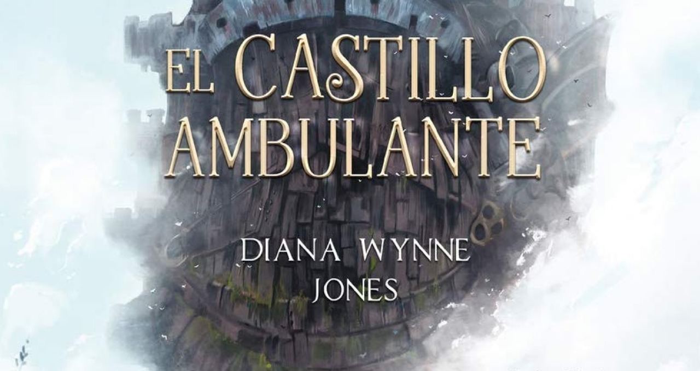
Cuando la Bruja del Páramo convierte a Sophie Hatter en
una anciana, la joven abandona la sombrerería familiar
para pedir ayuda en el único lugar mágico que se le
ocurre: el castillo ambulante que atemoriza a los
habitantes de Market Chipping.
Título original: Howl's Moving Castle
Fecha de publicación: 1986
Premios: Premio Fénix de literatura (2006)
Género: Novela
El castillo en el aire
Libro de Diana Wynne Jones
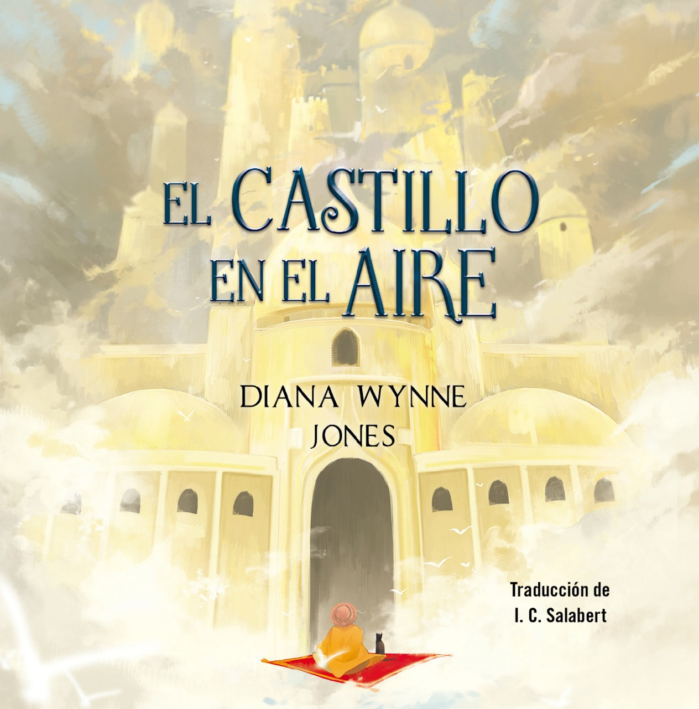
Muy al sur de Ingary, un joven mercader de alfombras
llamado Abdullah fantasea con una vida emocionante llena
de bandidos y princesas en apuros... Hasta que un
misterioso extraño le vende una alfombra voladora.
Fecha de publicación original: 1990
Autora: Diana Wynne Jones
Libro anterior: El castillo ambulante
Libro posterior: La casa de los mil pasillos
Idioma original: Inglés
Géneros: Novela, Literatura infantil, Literatura
fantástica, Ficción adulto joven
La casa de los mil pasillos
Libro de Diana Wynne Jones
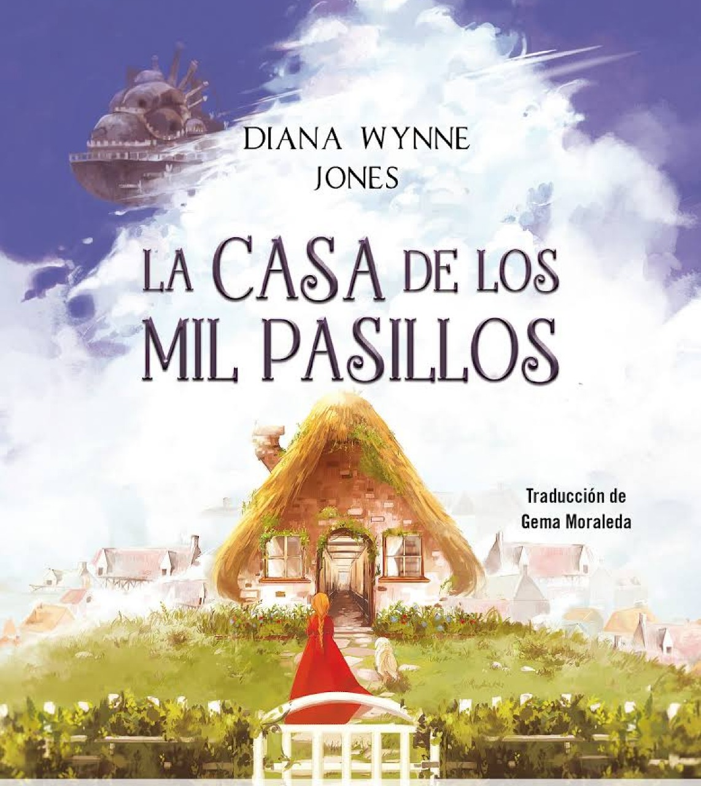
En la ciudad de High Norland, la joven Charmain Baker
pasa sus días con la nariz siempre metida en algún
libro. Cuando su familia la envía a la casa de un
pariente mago, ella parte emocionada por vivir al fin su
propia aventura.
Fecha de publicación original: 7 de junio de 2008
Autora: Diana Wynne Jones
Libro anterior: El castillo en el aire
Artista de portada: John Rocco
Géneros: Literatura fantástica, Ficción adulto joven
Nominaciones: Mythopoeic Fantasy Award for Children's
Literature
PERSONAJES:
Sophie Hatter: Es una joven de dieciocho años que trabaja en una sombrerería. Es víctima de una maldición por parte de la Bruja Calamidad que le hace tener la apariencia de una mujer de noventa años. De carácter tímido y cerrado, tendrá que enfrentarse a sí misma para poder romper el maleficio que se ha desatado sobre ella y ayudar a Howl. A lo largo de la cinta va desarrollando sentimientos hacia Howl. En la adaptación japonesa su seiyū (actor de voz) es Chieko Baishō.
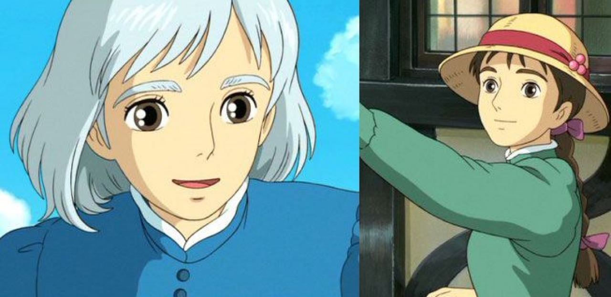
Howl Jenkins Pendragon: Es el amo y señor del castillo ambulante. Es un mago dotado de un poder inmesurable del que se cuentan varias leyendas, entre ellas que se dedica a robar el corazón de mujeres jóvenes y bellas. De apariencia joven y energética y algo vanidoso. Rechaza la invitación del rey de unirse a la guerra puesto que vive sus días con despreocupación y sin objetivos. En realidad, aborrece la guerra y por ende trata de sabotear las naves de guerra de ambos bandos para así evitar la masacre de inocentes, a costa de perder su propia humanidad. En la adaptación japonesa su seiyū es Takuya Kimura.
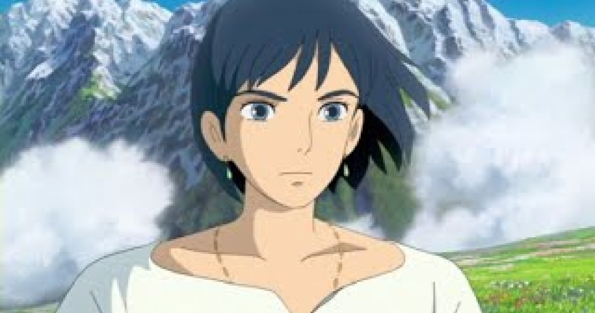
Bruja Calamidad: Es una malvada bruja que persigue a Howl para adueñarse de su corazón. De acuerdo con Howl, la Bruja Calamidad alguna vez fue una bella mujer, motivo por el cual se acercó a ella, pero terminó huyendo al ver cómo era realmente. Desde ese entonces, la bruja lo ha estado persiguiendo. También solía ser la bruja de la Casa Real de Kingsbury, pero fue expulsada cincuenta años atrás por Madame Suliman y eligió el Páramo para vivir, de ahí su nombre. Es la responsable del maleficio que atormenta a Sophie, y tiene a su mando hombres de lodo. En la adaptación japonesa su seiyū es Akihiro Miwa.
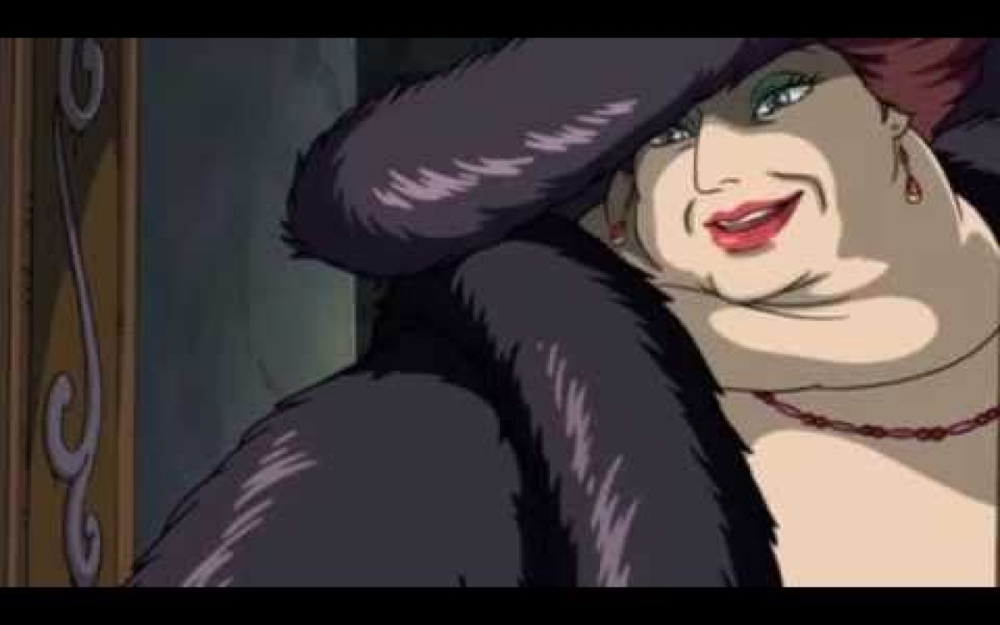
Mark: Es el joven discípulo de Howl. Es huérfano y se encarga de recibir a los visitantes que llegan al castillo para ver al mago o a los enviados del rey que portan cartas de invitación. Con el tiempo llega a tenerle un cariño especial a Sophie. En la adaptación japonesa su seiyū es Ryūnosuke Kamiki.
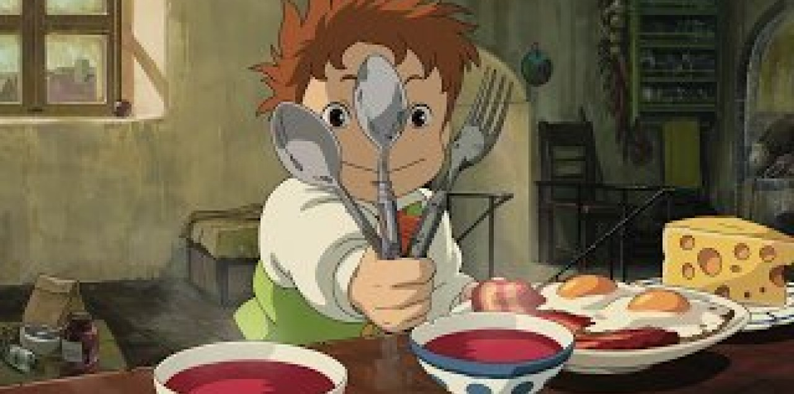
Calcifer: Es un demonio de fuego, encargado de mantener la energía del castillo ambulante. Irónico y bromista, promete ayudar a Sophie pero a cambio debe ayudarlo a liberarse del pacto que lo ata a Howl. En la adaptación japonesa su seiyū es Tatsuya Gashūin.
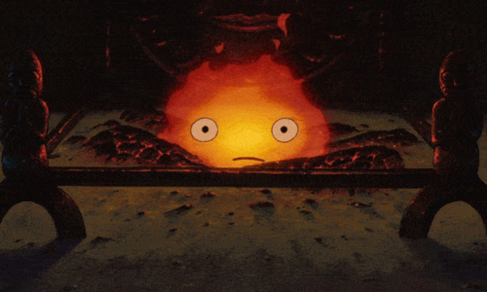
Madame Suliman: Hechicera del reino, audita a Howl para saber la razón por la que no ha querido participar en la guerra. Igual de fría como gentil, Madame Suliman tiene la capacidad de retirar la magia de cualquier hechicero. En la adaptación japonesa su seiyū es Haruko Katō.
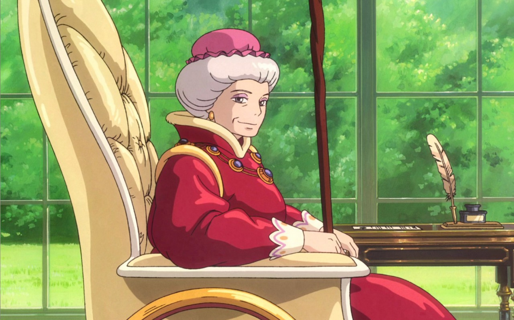
Nabo o Cabeza de Nabo: Un espantapájaros que siempre intenta ayudar a Sophie. Hace honor a su nombre al tener un nabo como cabeza. En realidad, éste resulta ser el príncipe Justin, del reino vecino, quien había sido hechizado y cuya desaparición había sido la causa de la guerra. En la adaptación japonesa su seiyū es Yō Ōizumi.
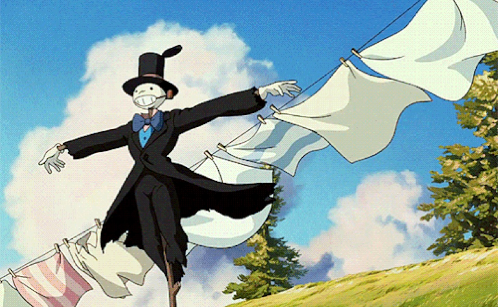
Lettie: Es la hermana menor de Sophie. En la adaptación japonesa su seiyū es Yayoi Kazuki.
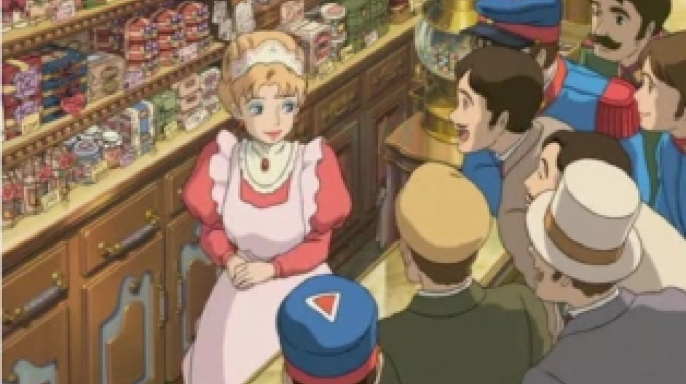
Heen: Es el perro mágico de Madame Suliman, quien le encarga investigar la situación geográfica de Howl. Al final termina abandonando a Suliman y uniéndose a la nueva familia residente del castillo. En la adaptación japonesa su seiyū es Daijirō Harada.
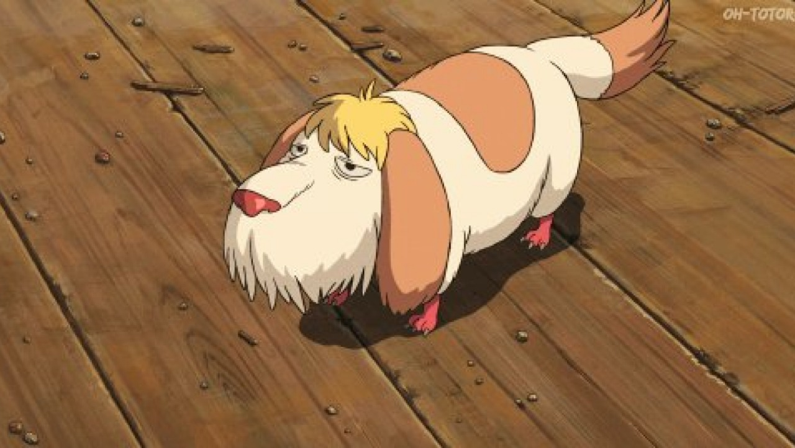
Rey Kokuō de Ingary: Es el rey de Ingary. En la adaptación japonesa su seiyū es Akio Ōtsuka.